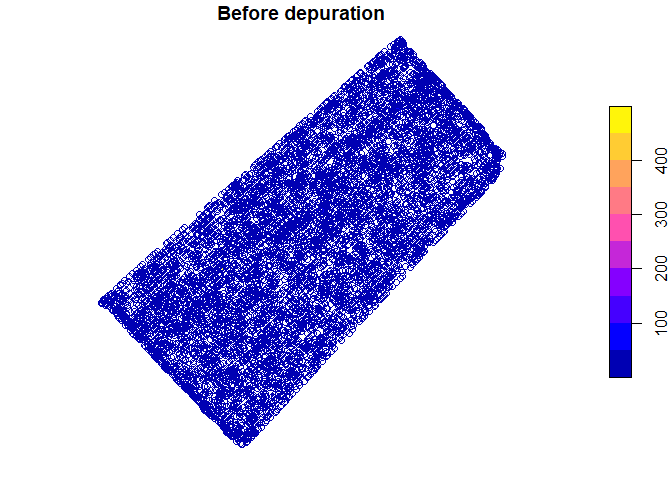
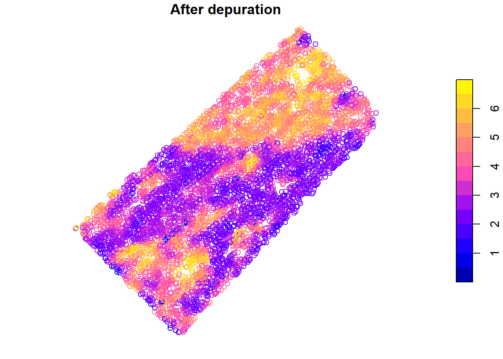
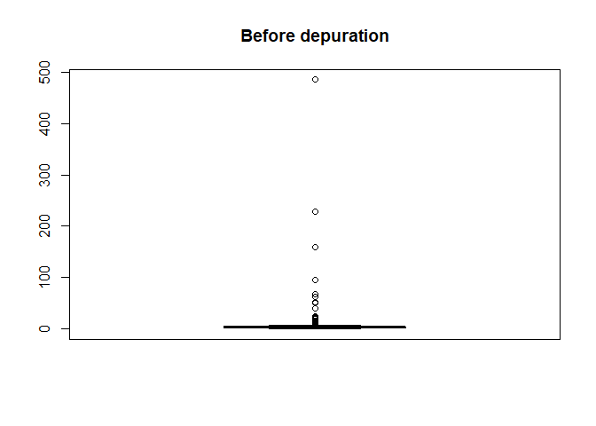
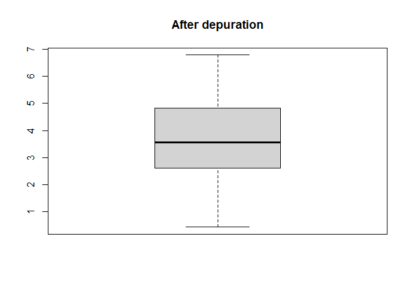

The goal of paar is to provide useful functions for precision agriculture spatial data depuration.
Installation
You can install the development version from GitHub with:
# install.packages("devtools")
devtools::install_github("PPaccioretti/paar")Example
The package has a complete protocol for automating error removal. Default values of all functions are optimized for precision agricultural data.
library(paar)
library(sf)
#> Warning: package 'sf' was built under R version 4.3.3
data("barley", package = 'paar')barley data contains barley grain yield which were obtained using calibrated commercial yield monitors, mounted on combines equipped with DGPS.
#Convert barley data to an spatial object
barley_sf <- st_as_sf(barley,
coords = c("X", "Y"),
crs = 32720)
barley_dep <-
depurate(barley_sf,
"Yield")
#> Concave hull algorithm is computed with
#> concavity = 2 and length_threshold = 0
# Summary of depurated data
summary(barley_dep)
#> normal point border spatial outlier MP spatial outlier LM
#> 5673 (77%) 964 (13%) 343 (4.6%) 309 (4.2%)
#> global min outlier
#> 99 (1.3%) 6 (0.081%)Spatial yield values before and after depuration process can be plotted
plot(barley_sf["Yield"], main = "Before depuration")
plot(barley_dep$depurated_data["Yield"], main = "After depuration")
Also distribution of yield values can be plotted
boxplot(barley_sf[["Yield"]], main = "Before depuration")
boxplot(barley_dep$depurated_data[["Yield"]], main = "After depuration")
References
- Vega, A., Córdoba, M., Castro-Franco, M. et al. (2019). Protocol for automating error removal from yield maps. Precision Agric 20, 1030–1044 https://doi.org/10.1007/s11119-018-09632-8
- Paccioretti, P., Córdoba, M., & Balzarini, M. (2020). FastMapping: Software to create field maps and identify management zones in precision agriculture. Computers and Electronics in Agriculture, 175, 105556 https://doi.org/10.1016/j.compag.2020.105556.